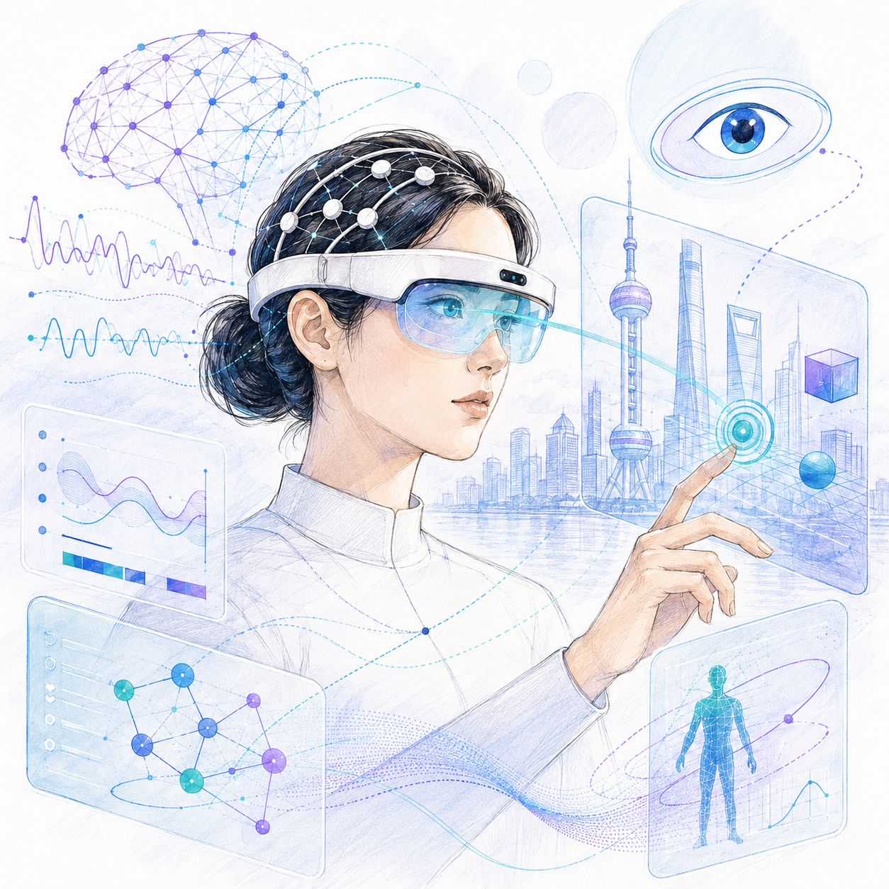

Connect communities
Bring gaze interaction, BCI, AR/VR, wearable sensing, and ubiquitous computing researchers into one focused forum.
Call for Papers
A UbiComp/ISWC 2026 workshop for researchers building the next generation of gaze, neural sensing, adaptive interaction, and immersive ubiquitous computing systems.

About the workshop
Eye tracking and brain-computer interfaces are becoming increasingly important for ubiquitous, wearable, and immersive computing. Gaze can reveal visual attention, information needs, task strategies, and interaction intention, while brain signals can complement it with cognitive load, affective state, attention, fatigue, and neural intention.
This workshop brings together researchers and practitioners from eye tracking, BCI, HCI, ubiquitous computing, wearable computing, extended reality, physiological sensing, and human-AI interaction to discuss emerging systems, open challenges, and future directions.
Bring gaze interaction, BCI, AR/VR, wearable sensing, and ubiquitous computing researchers into one focused forum.
Discuss fusion, calibration, robustness, personalization, deployment, privacy, ethics, and social acceptability.
Map future research directions for gaze-BCI interaction in everyday, mobile, wearable, and immersive contexts.
Topics of interest
Call for papers
Submissions should follow the official UbiComp/ISWC 2026 workshop paper template and formatting instructions. Accepted workshop papers are planned for inclusion in the ACM Digital Library and UbiComp/ISWC 2026 adjunct proceedings, subject to the official publication requirements of the conference.
2-4 pages presenting viewpoints, challenges, or future research directions.
2-4 pages describing ongoing research, early findings, systems, or studies.
2-4 pages describing prototypes, toolkits, datasets, or sensing systems.
1-2 pages presenting critical, speculative, or discussion-provoking ideas.
Important dates
Workshop format
Organizers introduce the workshop goals, expected outcomes, and shared questions around gaze and neural sensing.
Accepted submissions and invited perspectives frame current progress, technical barriers, and application opportunities.
Participants discuss multimodal fusion, deployment, interaction design, datasets, ethics, privacy, and future applications.
Groups report insights and unresolved questions, then map concrete next steps for collaboration beyond the workshop.
Organizers
Zhejiang University of Technology
swc@zjut.edu.cnLancaster University
j.hu23@lancaster.ac.ukShanghai Jiao Tong University
dongzx@sjtu.edu.cnContact and submission
Please refer to the CFP PDF for the workshop scope, submission types, review process, and expected format.